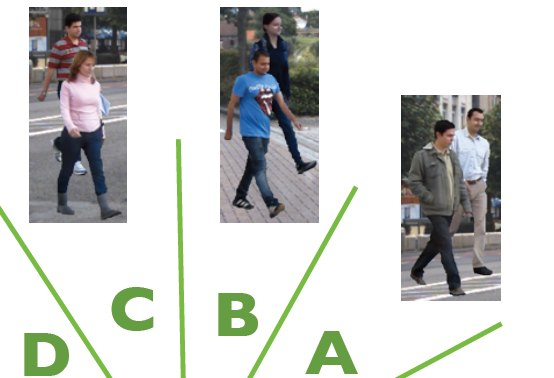

Learning People Detectors for Tracking in Crowded Scenes

Abstract
People tracking in crowded real-world scenes is challenging due to
frequent and long-term occlusions. Recent tracking methods obtain the
image evidence from object (people) detectors, but typically use
off-the-shelf detectors and treat them as black box components. In this
paper we argue that for best performance one should explicitly train
people detectors on failure cases of the overall tracker instead. To
that end, we first propose a novel joint people detector that combines a
state-of-the-art single person detector with a detector for pairs of
people, which explicitly exploits common patterns of person-person
occlusions across multiple viewpoints that are a common failure case for
tracking in crowded scenes. To explicitly address remaining failure
cases of the tracker we explore two methods. First, we analyze typical
failure cases of trackers and train a detector explicitly on those
failure cases. And second, we train the detector with the people tracker
in the loop, focusing on the most common tracker failures. We show that
our joint multi-person detector significantly improves both detection
accuracy as well as tracker performance, improving the state-of-the-art
on standard benchmarks.
Reference
Learning People Detectors for Tracking in Crowded Scenes
S. Tang,
M. Andriluka,
A. Milan,
K. Schindler,
S. Roth and
B. Schiele
ICCV 2013
bibtex
paper |
poster |
video
 |
|
@INPROCEEDINGS{Tang:20013:LPD,
author = {S. Tang and M. Andriluka and A. Milan and K. Schindler and S. Roth and B. Schiele},
title = {Learning People Detectors for Tracking in Crowded Scenes},
booktitle = {ICCV},
year = {2013}
}
Code
You can download the tracking code here
Data
... to come